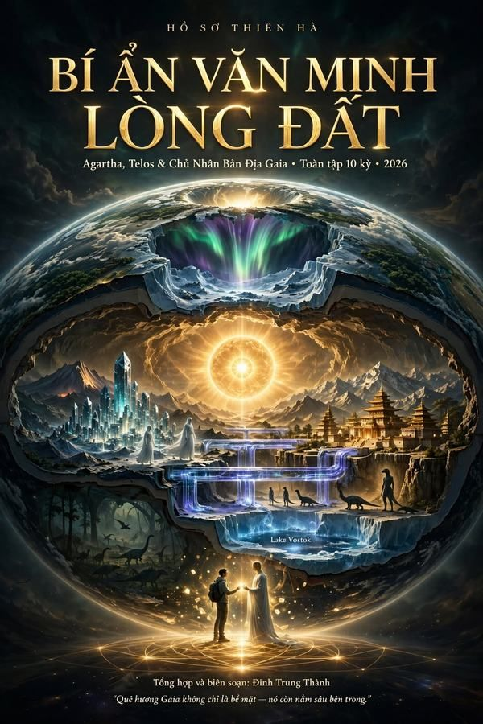
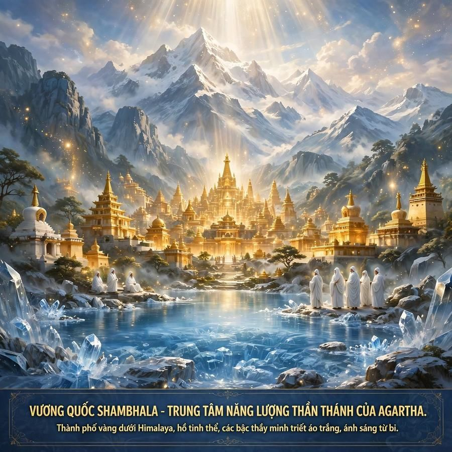
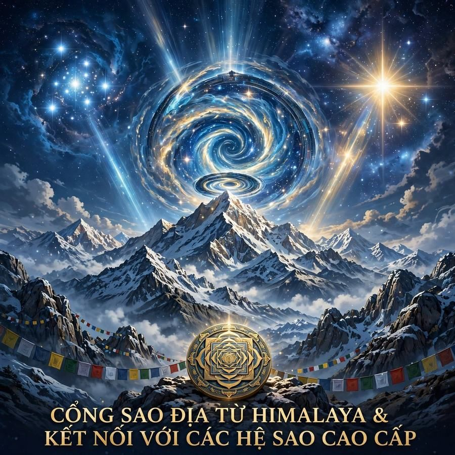
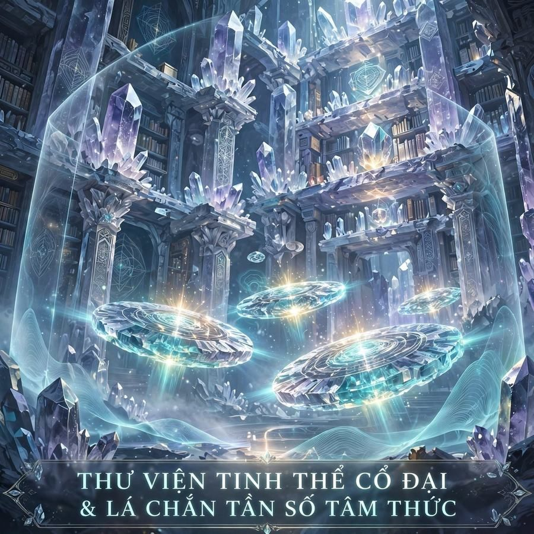
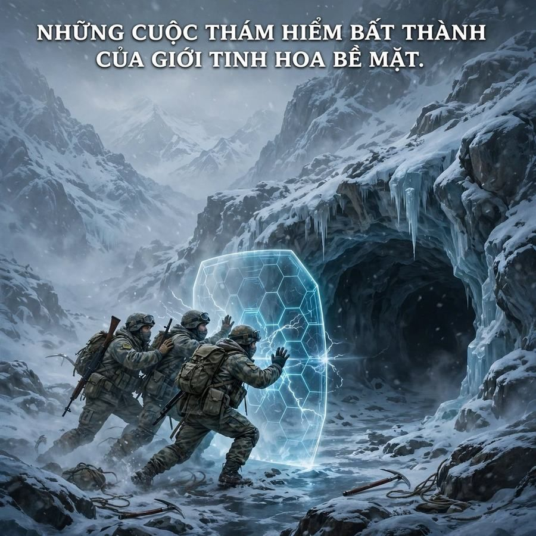
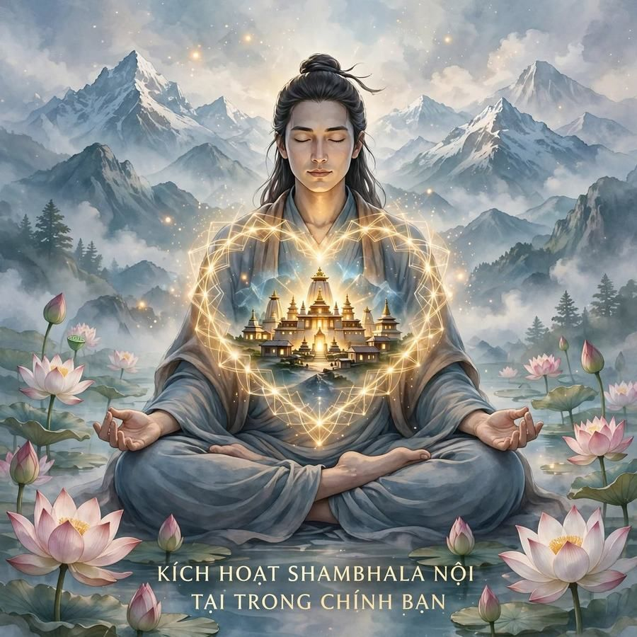

Trang chủ / Chuyên đề 4: Văn Minh Lòng Đất / Kỳ 36
Chuyên đề 4 · Kỳ 36 / 90
VƯƠNG QUỐC SHAMBHALA, THẦN THOẠI TÂY TẠNG & CÁC CỔNG SAO NĂNG LƯỢNG DÃY HIMALAYA

Ở Kỳ 5, chúng ta đã cùng nhau du hành đến thành phố ngầm Telos bên dưới ngọn núi thiêng Shasta, khám phá di sản Tình Yêu Thương và tri thức tinh thể được cư dân Lemuria bảo tồn trọn vẹn qua hàng chục ngàn năm.
Hôm nay, chúng ta sẽ tiếp tục chuyến hành trình hướng về phương Đông cổ kính, đến với vùng đất được mệnh danh là "Mái nhà của Thế giới" — dãy núi Himalaya hùng vĩ — để giải mã vương quốc ngầm huyền thoại nhất trong tâm thức nhân loại: Vương Quốc Shambhala (Shangri-La).
Shambhala thực chất là gì trong cấu trúc Trái Đất Rỗng và mạng lưới Agartha? Tại sao huyền thoại Tây Tạng và Ấn Độ giáo lại miêu tả Shambhala như một thiên đường của sự giác ngộ? Cấu trúc Cổng Sao địa từ cực mạnh trên dãy Himalaya vận hành ra sao để kết nối Shambhala với các hệ sao cao cấp trong dải Ngân Hà? Mật mã Kalachakra (Bánh xe Thời gian) và thư viện tri thức tinh thể được bảo vệ ra sao? Và tại sao mọi cuộc thám hiểm mang tư tưởng chiếm đoạt của các thế lực bề mặt đều hoàn toàn thất bại trước rào chắn tần số của vương quốc này?
Hãy cùng dấn thân vào Kỳ 6: Vương Quốc Shambhala, Thần Thoại Tây Tạng & Các Cổng Sao Năng Lượng Dãy Himalaya để mở ra không gian thiêng liêng nhất của thế giới ngầm!
✦ ✦ ✦1. VƯƠNG QUỐC SHAMBHALA — TRUNG TÂM NĂNG LƯỢNG THẦN THÁNH CỦA AGARTHA
Trong các văn bản cổ đại Tây Tạng và truyền thuyết Tạng truyền, Shambhala không đơn thuần là một địa danh địa lý thô ráp, mà là Thủ đô Tinh thần Tối cao của toàn bộ Mạng lưới Agartha.
A. Vùng Đất Của Sự Tinh Khiết & Giác Ngộ
- Tồn Tại Ở Dải Mật Độ Tần Số Cao (4D–5D): Shambhala nằm ẩn sâu dưới lớp vỏ đá của dãy Himalaya và cao nguyên Tây Tạng, hoạt động ở dải mật độ năng lượng 4D và 5D.
- Không Gian Tự Phát Sáng: Nơi đây được bao bọc bởi nguồn ánh sáng từ trường mềm mại, có những thung lũng xanh tươi quanh năm, các hồ nước tinh thể linh thiêng và những công sở ngầm mang hình học thiêng liêng rực rỡ.
B. Nơi Trú Ẩn Của Các Bậc Thầy Minh Triết (Ascended Masters)
- Hội Đồng Minh Triết Shambhala: Vương quốc là nơi hội tụ của các Bậc Thầy Tâm Linh, các vị Đại Tư Tế và các sinh mệnh thăng hoa đại diện cho nhiều chu kỳ tiến hóa của Trái Đất.
- Giữ Vững Tần Số Cho Trái Đất: Nhiệm vụ tối cao của Shambhala là phát ra dải tần số từ bi và trí tuệ để cân bằng mạng lưới năng lượng Gaia, ngăn không cho các lực lượng bóng tối phá hủy hoàn toàn dải từ trường của hành tinh.

2. CỔNG SAO ĐỊA TỪ HIMALAYA & SỰ KẾT NỐI VỚI CÁC HỆ SAO CAO CẤP
Dãy Himalaya không chỉ là ngọn núi cao nhất bề mặt Trái Đất, mà còn là Luân Xa Vương Miện (Crown Chakra) trong hệ thống kinh mạch năng lượng địa từ của hành tinh.
A. Trạm Trung Chuyển Năng Lượng Siêu Chiều
- Cổng Sao Địa Từ Cực Mạnh (Stargate Node): Bên dưới các rặng núi tuyết vĩnh cửu là những Cổng Sao tự nhiên nối thẳng với các hệ sao cao cấp như Sirius, Pleiades, Arcturus và Tiên Nữ.
- Dịch Chuyển Tức Thời Trên Mạng Lưới Agartha: Thông qua cổng năng lượng này, các sinh mệnh Shambhala và các đoàn du hành vũ trụ hòa bình có thể di chuyển tức thời đến các đô thị ngầm khác (như Telos, Posid) hoặc du hành ra ngoài không gian sâu mà không cần dùng tàu cơ học thô ráp.
B. Mật Mã Kalachakra (Bánh Xe Thời Gian)
- Khoa Học Thời Gian & Chu Kỳ Vũ Trụ: Tại Shambhala, giáo lý và công nghệ Kalachakra (Bánh xe Thời gian) được lưu giữ nguyên vẹn. Đây là hệ thống tri thức giả kim thuật lượng tử giúp giải mã các chu kỳ di chuyển của Hệ Mặt Trời, sự chuyển giao kỷ nguyên và cơ chế thăng hoa nhận thức của loài người.

3. THƯ VIỆN TINH THỂ CỔ ĐẠI & LÁ CHẮN TẦN SỐ TÂM THỨC
Bên trong lòng đất Shambhala là nơi cất giữ những kho báu tri thức vô giá nhất của lịch sử Đa Vũ trụ.
A. Thư Viện Thạch Anh Lưu Giữ Lịch Sử Nguyên Thủy
- Đĩa Tinh Thể & Thư Tịch Ánh Sáng: Thư viện Shambhala lưu giữ trọn vẹn bản ghi chép về Cuộc Đại Di Cư Lyra, lịch sử khởi nguyên của Trái Đất, bản thiết kế 12 chuỗi DNA Paa-Taal và toàn bộ tri thức của các nền văn minh đã sụp đổ trên bề mặt.
- Giải Mã Bằng Ý Thức: Các thông tin này không được ghi bằng chữ viết thô ráp mà được mã hóa dưới dạng ma trận ánh sáng phân tử. Người đọc chỉ cần chạm tâm trí vào tinh thể để trực tiếp trải nghiệm toàn bộ sự kiện lịch sử dưới dạng thực tế ba chiều!
B. Lá Chắn Tần Số Vô Hình (Frequency Barrier)
- Không Thể Xâm Nhập Bằng Sức Mạnh Vật Lý: Shambhala được bảo vệ bởi một rào chắn năng lượng tâm thức cực mạnh.
- Rào Chắn Nhận Thức: Bất kỳ ai mang tư tưởng tham lam, sợ hãi hay khao khát chiếm đoạt khi tiến gần khu vực cửa ngõ sẽ lập tức bị ma trận tần số làm nhiễu loạn hướng đi, rơi vào sương mù ảo giác hoặc bị đẩy lùi mà không thể nhìn thấy lối vào!

4. NHỮNG CUỘC THÁM HIỂM BẤT THÀNH CỦA GIỚI TINH HOA BỀ MẶT
Trong thế kỷ 20, nhiều thế lực bề mặt đã phát động các chiến dịch quy mô lớn nhằm săn tìm Shambhala để chiếm đoạt công nghệ siêu nhiên.
A. Các Đoàn Thám Hiểm Tây Tạng
- Khao Khát Sức Mạnh Bá Chủ: Giới tinh hoa quân sự tham vọng trước đây đã cử nhiều đoàn thám hiểm chuyên biệt đến vùng núi Tây Tạng, mang theo các bản đồ cổ để truy tìm lối vào Shambhala với hy vọng chiếm đoạt vũ khí năng lượng và công nghệ trường sinh.
- Sự Thất Bại Hoàn Toàn: Mọi cuộc thám hiểm dùng vũ lực và tham vọng thô ráp đều thất bại thảm hại. Họ chỉ tìm thấy những hang động băng giá trống rỗng và bị đẩy lui bởi điều kiện thời tiết cực đoan cùng sự can thiệp từ trường của Shambhala.
B. Bài Học Về Sự Giác Ngộ Tâm Linh
- Shambhala Không Dành Cho Sự Chiếm Đoạt: Sự thất bại của các lực lượng bề mặt khẳng định một quy luật bất biến của Đa Vũ trụ: Tri thức và công nghệ cao cấp chỉ được trao cho những nhận thức đã đạt đến sự thuần khiết, từ bi và hòa bình!

5. LỜI KẾT KỲ 6: KÍCH HOẠT "SHAMBHALA NỘI TẠI" TRONG CHÍNH BẠN
Kỳ 6 của chuyên đề 4 khép lại mang đến thông điệp tâm linh rực rỡ từ Vương quốc Shambhala:
- Shambhala Là Trạng Thái Nhận Thức Tối Cao: Shambhala không chỉ là một đô thị dưới lòng đất Himalaya; Shambhala chính là biểu tượng của Trái Tim Giác Ngộ nằm ngay bên trong mỗi con người.
- Quay Về Khai Mở Tâm Trí: Để "bước vào" Shambhala, bạn không cần phải thực hiện những chuyến leo núi hiểm trở. Khi bạn buông bỏ sự tranh chấp, nuôi dưỡng lòng từ bi, thiền định định tâm và sống trong sự hòa hợp, bạn đang trực tiếp kích hoạt dải tần số Shambhala ngay trong chính bản thể mình!

Bình luận
Chia sẻ cảm nhận, câu hỏi hoặc tài liệu đối chiếu. Không cần đăng nhập.
Đang tải…